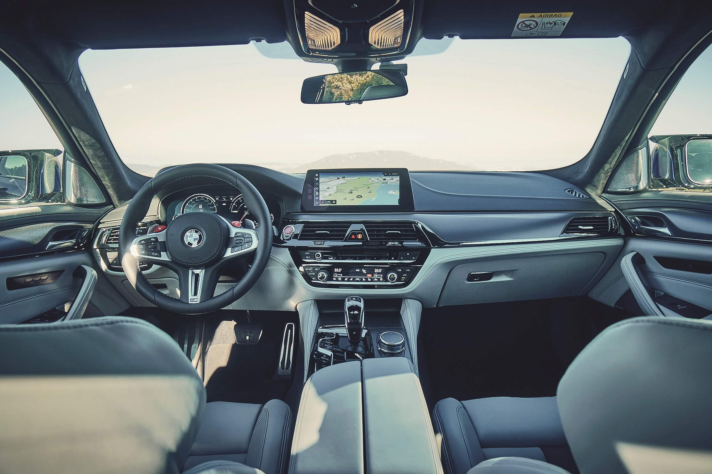

ისე კი, M5-ის მართვა სრული ამძრავის წყალობით, საგრძნობლად უფრო სოლიდური გახდა. ამაზე პირველ რიგში ცენტრალური კომპიუტერი ზრუნავს. იმ დროს, როცა სხვები მცდელობებს არ აკლებენ და ათას რამეს იგონებენ, M-ის ინჟინრები მინიმუმ ორი საფეხურით მაღლა დგანან. 600-ცხენისძალიანი სედანის მართვა ლიმიტზეც კი ჰამონიულია.

არჩევანი სამ რეჟიმს შორის კეთდება. 4WD-ს შემთხვევაში უკანა ღერძზე მცირე ორიენტირება მაინც იგრძნობა. უფრო უკეთესია 4WD Plus, რომლითაც BMW-ს ნაღდი მოყვარული უკვე რეალურად ისიამოვნებს, 2WD-ს შემთხვევაში კი უკვე გაქვს ყველაფერი, რასაც ამ მანქანისგან ითხოვ - ოღონდ, ეს ის შემთხვევაა, როცა მაგარი მძღოლიც უნდა იყო.
მაგრამ მოდით, თანმიმდევრობას ნუ დავარღვევთ. ჯერ მოხვევის, სავალი ნაწილის და ამძრავის დაკალიბრებაა საჭირო - Efficient, Sport და Sport plus. შესაძლებელია ინდივიდუალური ჩარევა და ისე დაპროგრამება, რომ ნებისმიერი რეჟიმი თქვენს გემოზე იყოს დაყენებული და ეს რეჟიმი ღილაკზე ერთი დაჭერით გაააქტიურო. გადაცემების გადართვების სისწრაფეც სამ საფეხურზე რეგულირდება. ამისათვის განკუთვნილი ჩამთველი ბერკეტის გვერდით ზის. BMW-ში ირწმუნებიან, რომ ახალი 8-საფეხურიანი ავტომატიკა გადაცემებს ისე რთავს, როგორც ლეგენდარული ძველი ორქუროიანი, მაგრამ მთლად ეგრეც არაა საქმე - თუმცაღა, ძალიან ახლოსაა სიმართლესთან.